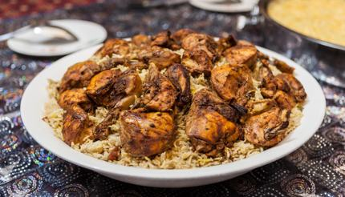

Food
 Dubai as a city has rapidly progressed in the last few decades; both physically in its geographical imprint and its economy. This development has led to Dubai becoming a focal point of tourism and investment. As such the influences of foreign investment can be seen all around the city, in its architecture, its nightlife and its pastimes.
Most importantly however, Dubai retains its Arabic culinary heritage albeit with flairs of western influence here and there. This has helped to bring middle eastern cuisine to the forefront of the international food scene. As such, what you eat and drink whilst you enjoy your stay in Dubai is as important as what you do and what you see. To get you started in the right direction, Margoogat and Al Machboos are classical meat and rice-based Emiratis dishes and can be found all over the city. Particularly we recommend trying Al Barza Restaurant & Café on Jumeirah st. as they offer a wide range of traditional dishes in a relaxed and comfortable setting.
Conversely, should you miss the comforts of familiar cooking, the city has numerous restaurants and hotels offering a wide array of food from various backgrounds. Whatever it is your looking for, Dubai has it on offer. Similarly, supermarkets and grocery stores stock a mix of both western and Emiratis staples.